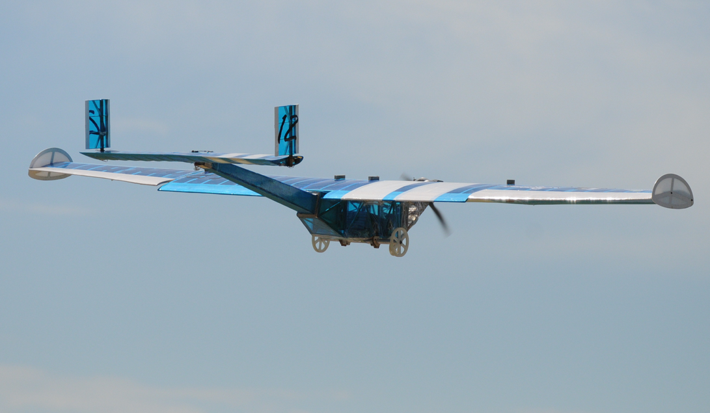
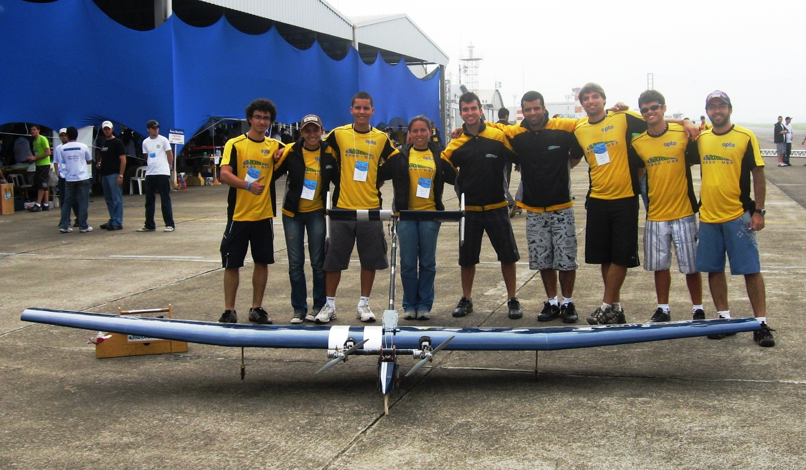

| 2010 |
SAE AeroDesign East | |
 | EESC-USP Advanced
Esse avião participou em uma categoria estreante da competição AeroDesign East: Advanced Class. Essa nova categoria veio substituir a Open Class, que teve suas principais características mantidas: continuam inexistindo limites dimensionais aos aviões, e são permitidas diferentes opções de motorização, limitando apenas a cilindrada total do grupo moto-propulsor. A grande surpresa foi a inclusão de uma nova vertente de projetos nas equipes, que tiveram que desenvolver um sistema de aquisição de dados (DAS) para medir a distância de decolagem da aeronave. O bom funcionamento do DAS era de suma importância para o êxito na competição, representando um grande desafio à equipe, cujos membros são, em sua grande maioria, estudantes de Eng. Aeronáutica. Assim, a equipe decidiu por reempregar (com modificações mínimas) o projeto EESC-USP East 2009, porém incluindo na aeronave o DAS, cujo projeto e construção ficou a cargo de um único membro, graduando em Eng. Mecatrônica. |
|
A conclusão do DAS sofreu atrasos, mas nas vésperas da competição pareceu à equipe que o sistema estava completamente preparado para fazer medições precisas. No 1º dia de competição, a precisão do DAS foi avaliada em um simples teste, em que a aeronave foi empurrada em solo por um membro. Nesse teste, o DAS atingiu um fator de precisão de 95.3%, semelhante ao das demais equipes. Nas baterias de vôo, no entanto, começaram a surgir problemas no sistema. Nas primeiras tentativas o DAS nem mesmo funcionou. Por outro lado, o desempenho da aeronave se mostrou muito superior ao das concorrentes. O avião EESC-USP Advanced voou diversas baterias com a carga máxima, de 18kg, enquanto que o recorde das demais equipes foi de 12,7kg. Após algumas tentativas, o DAS finalmente funcionou e a equipe conseguiu um vôo válido com 18kg de carga. Porém, a distância medida foi muito diferente do comprimento da pista, prejudicando a pontuação global. Por fim, a equipe conseguiu ficar em 2º lugar geral, e ainda recebeu os prêmios de 1st Place Most Payload e 3rd Place Oral Presentation . |
| EESC-USP Regular
O avião da Regular Class contou com várias inovações da equipe. O Regulamento da competição proíbe a utilização de materiais compósitos, oferece bônus pela realização de um vôo vazio e não considera a eficiência estrutural na pontuação, dando ênfase à carga paga. Nessa competição, a única opção de motorização é o OS .61, e também há uma restrição dimensional. A equipe aproveitou uma constatação feita a partir da equipe EESC-USP Bravo 2009, que utilizou um aerofólio baseado no Selig 1223 na asa. Tal perfil aerodinâmico apresenta um bordo de fuga extremamente fino, o que dificulta sua construção e também prejudica a rigidez. Mesmo com esses problemas, a aeronave apresentou bom desempenho, revelando à equipe o potencial desse aerofólio. |  |
|
Após ensaios em túnel de vento, a equipe constatou a superioridade desse perfil frente outros já utilizados, como o Eppler 423 e o perfil EESC-1, e o adotou para o uso na asa do EESC-USP Regular. Em seguida, foram pesquisados novos materiais para substituirem os compósitos nas estruturas. Tal estudo acabou revelando à equipe combinações de materiais que permitem uma construção muito precisa, como lâminas de madeira, alumínio aeronáutico, espumas de PVC etc. Na competição de projeto, a equipe se decepcionou com a avaliação dos juízes tanto do Relatório Técnico quanto da Apresentação Oral, que sempre são muito bem elaborados pela equipe e bem avaliados pela maioria dos juízes. No entanto, nessa competição a equipe começou em 22º lugar, com uma desvantagem de 10 pontos em relação ao líder. Nas baterias de vôo, porém, a aeronave demonstrou a qualidade do projeto. Na 1ª bateria, o avião realizou um vôo vazio, e obteve a bonificação de 10 pontos. Nas demais baterias, a aeronave foi aumentando a carga levada e subindo no ranking, até que na última bateria o avião levou 14,3 kg de carga útil. Nem mesmo a equipe esperava tal desempenho, e por isso a equipe também perdeu 7 pontos devido ao erro de previsão de carga. Por fim, a equipe ficou em 3º lugar geral e conquistou o prêmio de 2nd Place Most Payload. |
 |
EESC-USP Micro
O avião EESC-USP Micro marca a 1ª participação da equipe na Micro Class do AeroDesign East. O maior desafio imposto pelo Regulamento dessa categoria é que a aeronave obtenha alta eficiência estrutural, caiba inteiramente (e junto com o rádio-transmissor) em uma caixa de dimensões 46 x 33 x 14 cm e ainda comporte um volume mínimo no compartimento de carga. Visando cumprir essas restrições com êxito, a equipe focou na concepção de um compartimento de carga flexível e de encaixes que permitissem a desmontagem do avião. Chegou-se em um avião que, como visto na foto acima, apresenta uma vara central em que são fixos o motor, o trem de pouso, o compartimento de carga, a asa, o profundor e o leme. Todas as fixações permitiam a remoção de cada uma das peças, exceto a do profundor, já que a desmontagem deste não reduziria o volume ocupado na caixa. |
|
Além disso, a asa e a vara central foram divididas em 3 partes cada; o compartimento de carga era uma carenagem com juntas e laterais flexíveis, sem função estrutural, que adquiria a forma de uma placa ao ser pressionada. Até mesmo um pequeno rádio-transmissor foi escolhido para explorar o espaço da caixa de transporte. Na competição de projetos, a equipe conseguiu o 1º lugar. Nas baterias de vôo, o avião levou cada vez mais peso, preservando a liderança com folga e culminando em um vôo com Payload Fraction de 0,745. Por fim, a equipe conquistou o 1º lugar geral, e ainda os prêmios de 1st Place Highest Payload Fraction, 1st Place Oral Presentation e 2nd Place Written Design Report. |
| SAE AeroDesign Brasil |
| EESC-USP Charlie
Na sexta participação da equipe na classe Aberta, o projeto foi focado em conseguir transportar o máximo permitido pelas regras da competição: 35kg de MTOW. A utilização de 2 motores Rossi .60 bem como um novo aerofólio projetado pela equipe foram as principais inovações da aeronave. Na competição de projetos, a equipe ficou em 1º lugar no Relatório e na Apresentação Oral, o que já nos premiou com duas menções honrosas. Na sexta-feira, primeiro dia de voo, a equipe teve problemas com os receptores de 2.4 GHz no avião, o que nos impossibilitou de voar na primeira bateria classificatória. No sábado de manhã, após os problemas serem consertados, a aeronave voou tranquilamente com 22,6kg de carga paga, classificando a equipe para as próximas baterias. Neste mesmo dia a tarde, o Charlie tentou voar com 25,1 kg de carga paga. Porém devido a forte chuva que caia, a aeronave não conseguiu decolar. |  |
|
Na primeira tentativa de domingo, o avião voou com sua carga máxima (35kg de MTOW) para a euforia de todos os membros da equipe! No entanto, ele não conseguiu parar dentro da faixa da pista que garantia o bônus de pouso. Como para ganhar a competição era imprescindível a pontuação de pouso, voamos mais uma vez com 35kg para tentar ganhar esta importante bonificação. Entretanto, a aeronave quebrou no pouso, invalindando o voo. A equipe, então, se uniu para consertar a aeronave em tempo recorde, garantindo mais uma tentativa de voo. O avião, nesta última tentativa, infelizmente não conseguiu decolar. Ao término da competição, a aeronave ficou 2º lugar geral, mas levou todas as Menções Honrosas da Classe Aberta: |
 |
EESC-USP Alpha
A aeronave Alpha 2010 foi um aprimoramento da aeronave EESC-USP Regular 2010, projetada para a competição internacional AeroDesign East 2010. Basicamente, a equipe reprojetou as estruturas daquela aeronave, diminuiu suas dimensões, introduziu um sistema de freio e ainda utilizou fixações que permitissem a desmontagem completa do avião e sua disposição em uma caixa de pequeno volume. Mesmo com o reduzido tempo de projeto, a equipe conseguiu se destacar na primeira fase da competição, ficando em 3º lugar no Relatório e na Apresentação Oral. Com o resultado, a equipe foi para o dia seguinte preparada para arriscar logo na primeira tentativa de vôo, em que o avião foi carregado com 13kg de carga útil. No entanto, problemas no trem de pouso impediram a decolagem. Para a tentativa seguinte, a equipe planejou voar com menor carga, para garantir a classificação. Assim, a aeronave foi carregada com apenas 10kg, e conseguiu voar tranquilamente. No entanto, a roda se soltou do trem principal no pouso, e o vôo foi invalidado. |
|
Após as duas tentativas falharem, a equipe se preparou muito bem para o vôo no sábado, já que seria a última chance de classificação. A aeronave foi carregada com 7kg, decolou, voou e pousou sem nenhum problema. A classificação da equipe rendeu uma grande comemoração dos membros. Ainda na tarde do sábado, a equipe teve uma nova tentativa de vôo, que falhou devido a uma forte chuva que atingiu a pista no horário. Dessa forma, os vôos mais carregados foram todos adiados para o último dia da competição. No domingo, a equipe começou com 12,5kg de carga, com sucesso. Em seguida, a aeronave voou com 13,14kg. No pouso, a aeronave conseguiu parar exatamente em cima do limite da pista, e a pontuação dessa bateria deixou a equipe na liderança da competição! Essa conquista rendeu uma comemoração eufórica de todos os membros da equipe EESC-USP. Depois, foi aberta uma nova bateria para as 10 primeiras equipes da Classe Regular. Sabendo de sua posição, a equipe Alpha planejou um aumento na carga carregada, na intenção de bater um eventual aumento de pontuação de outras equipes. Nessa bateria, a equipe Tucano, da UFU, surpreendeu e voou com sua carga máxima e conseguiu ainda a bonificação de parada no pouso. O vôo da equipe Alpha foi extremamente emocionante. Logo após a decolagem no limite da pista, a aeronave não conseguiu ganhar altitude e voou a poucos centímetros do chão. Com o tempo, o avião chegou a ganhar alguns metros de altitude, e veio para pouso. No pouso, o avião tocou a roda no início da pista e "pulou", e foi voltar à pista cerca de 30m à frente, impedindo a parada antes da faixa de 61m. Assim, a equipe Alpha 2010 terminou em 2º lugar geral, atrás da vencedora Tucano, da UFU, ganhando novamente uma vaga na Classe Regular da competição AeroDesign East. |